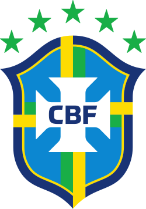

Favoritos ao título
França

Favorita absoluta e líder do ranking da FIFA, a França chega à Copa de 2026 com um elenco estelar liderado por Mbappé. Mesmo com baixas pontuais por lesão, a profundidade do grupo comandado por Deschamps mantém a expectativa alta pela busca do tetracampeonato mundial.
Pontos fortes
- Profundidade do Elenco: É a seleção com o maior "estoque" de talentos do mundo; se um titular se lesiona, o reserva costuma ser um astro de elite europeia.
- Poder de Decisão: Possui jogadores como Mbappé, que têm a capacidade individual de resolver partidas travadas em um único lance de velocidade.
- Consistência Tática: Sob o longo comando de Deschamps, a equipe tem uma identidade pragmática e resiliente, sabendo sofrer e contra-atacar com precisão.
Espanha

A Espanha chega à Copa como a atual campeã da Eurocopa, consolidando um estilo de jogo envolvente e vertical sob o comando de Luis de la Fuente. Liderada pelos jovens astros Lamine Yamal e Nico Williams, a Roja é vista como uma das grandes favoritas, unindo a tradicional posse de bola a uma nova e perigosa agressividade ofensiva.
Pontos fortes
- As Pontas Explosivas: Com Lamine Yamal e Nico Williams, a Espanha deixou de ser apenas posse de bola horizontal para se tornar um time vertical e letal no um contra um.
- Controle de Meio-Campo: A escola espanhola continua produzindo os melhores regentes, garantindo que a equipe dite o ritmo de quase todos os jogos que disputa.
- Identidade Coletiva: É, talvez, a seleção que joga de forma mais parecida com um clube, com mecanismos de pressão e movimentação muito bem treinados.
Brasil

O Brasil chega à Copa de 2026 em um momento de reconstrução, buscando sob o comando de Dorival Júnior a solidez que faltou nas Eliminatórias. Com o protagonismo de Vinícius Jr. e a ascensão de jovens como Endrick, a Seleção tenta superar as oscilações recentes para brigar pelo hexa, ainda que o nível coletivo atual esteja um degrau abaixo das potências europeias.
Pontos fortes
- Talento Individual nas Pontas: Vinícius Jr. e Rodrygo estão entre os melhores do mundo em criar desequilíbrio e chances de gol em espaços curtos.
- Renovação no Ataque: A chegada de nomes como Endrick traz um frescor e uma fome de gol que podem ser o diferencial em torneios de tiro curto.
- Peso da Camisa: Apesar das oscilações, o Brasil entra em campo com o respeito histórico que obriga qualquer adversário a jogar de forma mais cautelosa.
Argentina

A Argentina chega para a defesa do título mundial em um estágio de transição guiada por Lionel Scaloni, ainda colhendo os frutos da solidez coletiva que a consagrou. Com Lionel Messi em uma provável "última dança" e a afirmação de nomes como Alexis Mac Allister e Julián Álvarez, a Albiceleste combina mística e organização tática para tentar manter o domínio global.
Pontos fortes
- O "Fator Messi": Mesmo com a idade avançada, a presença de Lionel Messi atrai a marcação, abre espaços para os companheiros e garante passes geniais que decidem eliminatórias.
- Inteligência Tática de Scaloni: O treinador sabe adaptar o time conforme o adversário, alternando entre o controle de posse e uma defesa sólida e agressiva.
- Equilíbrio Psicológico: Após os títulos recentes, a pressão saiu dos ombros dos jogadores, permitindo que joguem com uma confiança e união poucas vezes vista na história do país.
Grupos de seleções
Grupo A
- Mexico
- South Africa
- South Korea
- Czech Republic
Grupo B
- Canada
- Bosnia and Herzegovina
- Qatar
- Switzerland
Grupo C
- Brazil
- Morocco
- Haiti
- Scotland
Grupo D
- United States
- Paraguay
- Australia
- Turkey
Grupo E
- Germany
- Curaçao
- Ivory Coast
- Ecuador
Grupo F
- Netherlands
- Japan
- Sweden
- Tunisia
Grupo G
- Belgium
- Egypt
- Iran
- New Zealand
Grupo H
- Spain
- Cape Verde
- Saudi Arabia
- Uruguay
Grupo I
- France
- Senegal
- Iraq
- Norway
Grupo J
- Argentina
- Algeria
- Austria
- Jordan
Grupo K
- Portugal
- Democratic Republic of the Congo
- Uzbekistan
- Colombia
Grupo L
- England
- Croatia
- Ghana
- Panama